Screen 1 · Dashboard (finished product)01 / 15
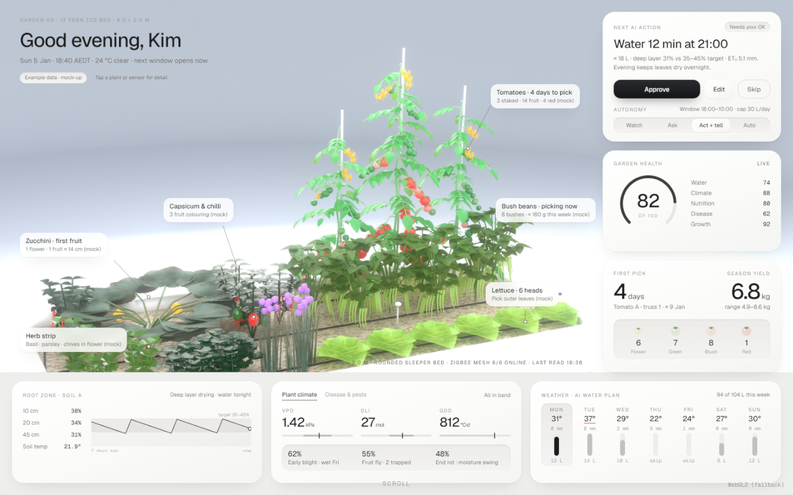
What it showsFull-width bed dashboard. No explanatory text.Three.js / WebGPU · sceneTextured plane 1.6×1.0, perspective cam fitted to coverCamera on scrollHold full view for the first scroll stopInteractionsnone, just scrollMaterialMeshBasicNodeMaterial with sRGB texture; glassy plants are baked in the renderFallbackWebGPURenderer, auto WebGL2 backend (tested).
Zoom 1 · Next AI action02 / 15
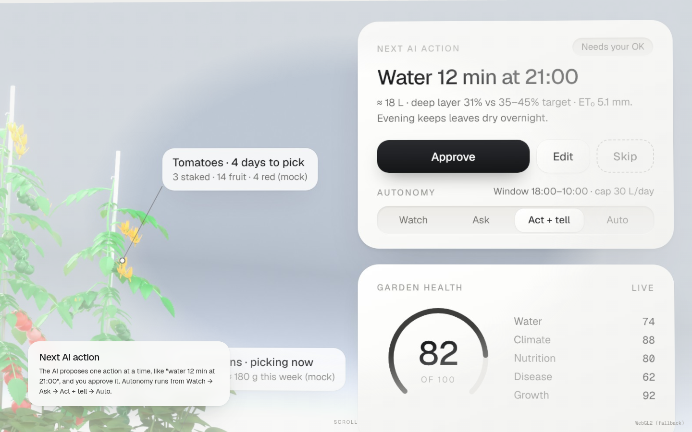
What it showsApprove / Edit / Skip + autonomy Watch→Ask→Act+tell→AutoThree.js / WebGPU · scenesame planeCamera on scrollDolly to top-right card (×2.3), soft vignette spotlightInteractionscaption card fades inMaterialMeshBasicNodeMaterial with sRGB texture; glassy plants are baked in the renderFallbackWebGPURenderer, auto WebGL2 backend (tested).
Zoom 2 · Soil moisture by depth03 / 15
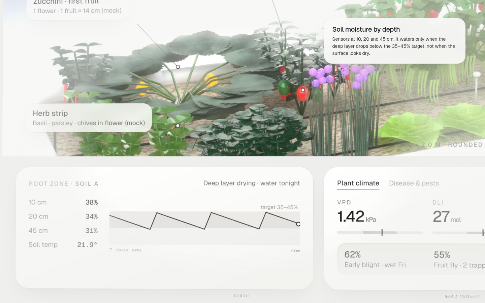
What it shows10 / 20 / 45 cm, 35–45% targetThree.js / WebGPU · scenesame planeCamera on scrollPan to root-zone cardInteractionscaptionMaterialMeshBasicNodeMaterial with sRGB texture; glassy plants are baked in the renderFallbackWebGPURenderer, auto WebGL2 backend (tested).
Zoom 3 · Weather-aware water plan04 / 15
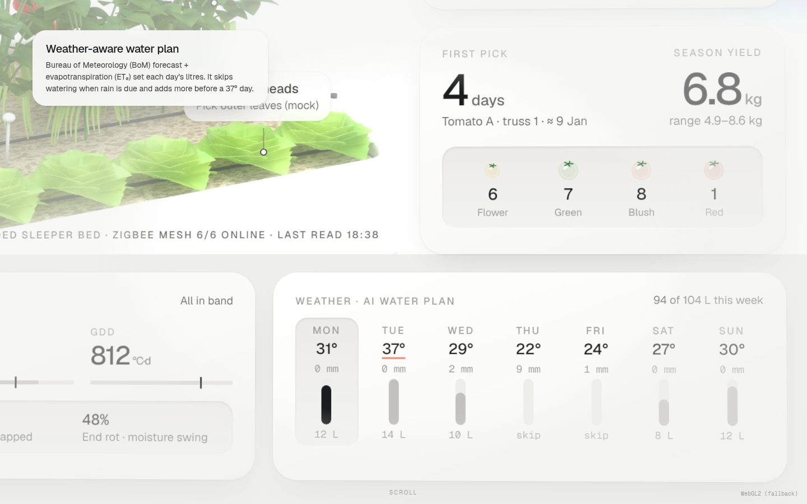
What it showsBoM forecast + ET₀ → litres/day, skip rainThree.js / WebGPU · scenesame planeCamera on scrollPan to weather cardInteractionscaptionMaterialMeshBasicNodeMaterial with sRGB texture; glassy plants are baked in the renderFallbackWebGPURenderer, auto WebGL2 backend (tested).
Zoom 4 · Plant climate05 / 15
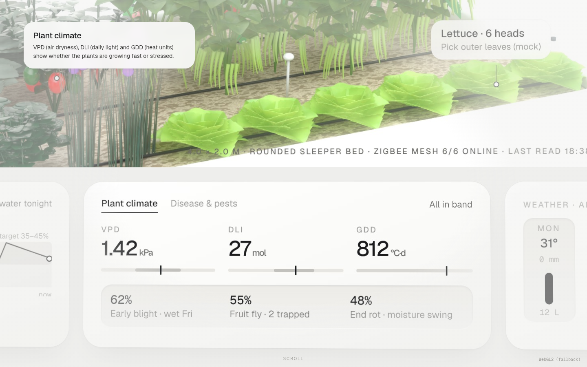
What it showsVPD / DLI / GDDThree.js / WebGPU · scenesame planeCamera on scrollPan to climate cardInteractionscaptionMaterialMeshBasicNodeMaterial with sRGB texture; glassy plants are baked in the renderFallbackWebGPURenderer, auto WebGL2 backend (tested).
Zoom 5 · Disease & pest risk06 / 15
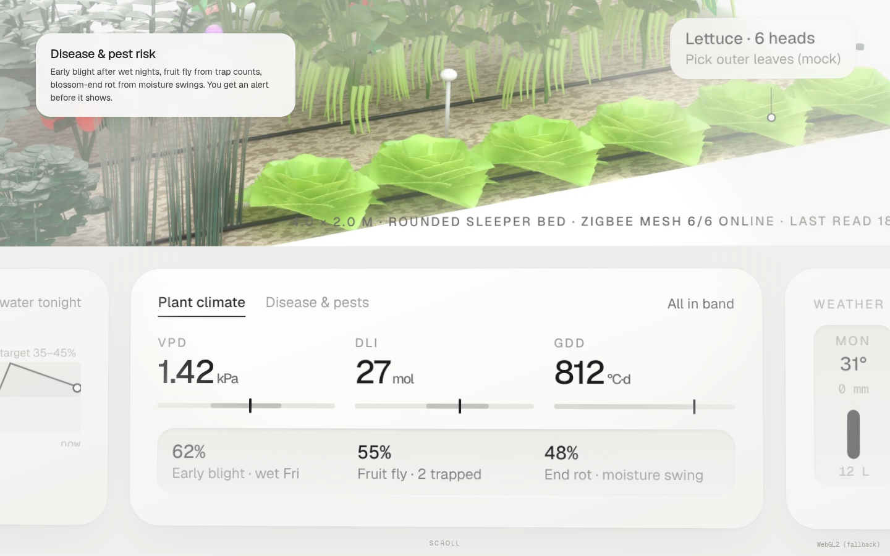
What it showsblight, fruit fly, end rotThree.js / WebGPU · scenesame planeCamera on scrollPush to risk rowInteractionscaptionMaterialMeshBasicNodeMaterial with sRGB texture; glassy plants are baked in the renderFallbackWebGPURenderer, auto WebGL2 backend (tested).
Zoom 6 · Camera growth twin07 / 15
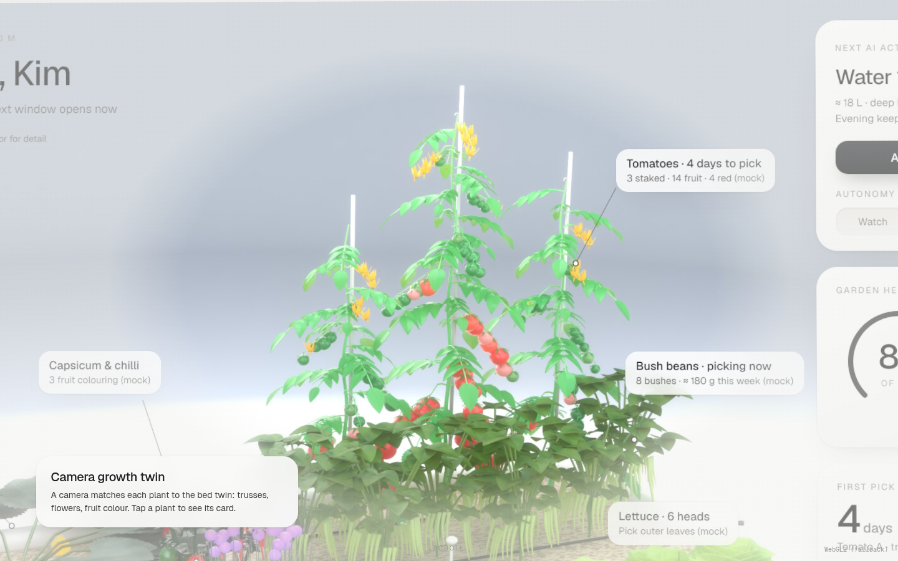
What it showsplant-by-plant trackingThree.js / WebGPU · scenesame planeCamera on scrollWide pan to the bedInteractionslater: hover crop → cardMaterialMeshBasicNodeMaterial with sRGB texture; glassy plants are baked in the renderFallbackWebGPURenderer, auto WebGL2 backend (tested).
Zoom 7 · Harvest countdown & yield08 / 15
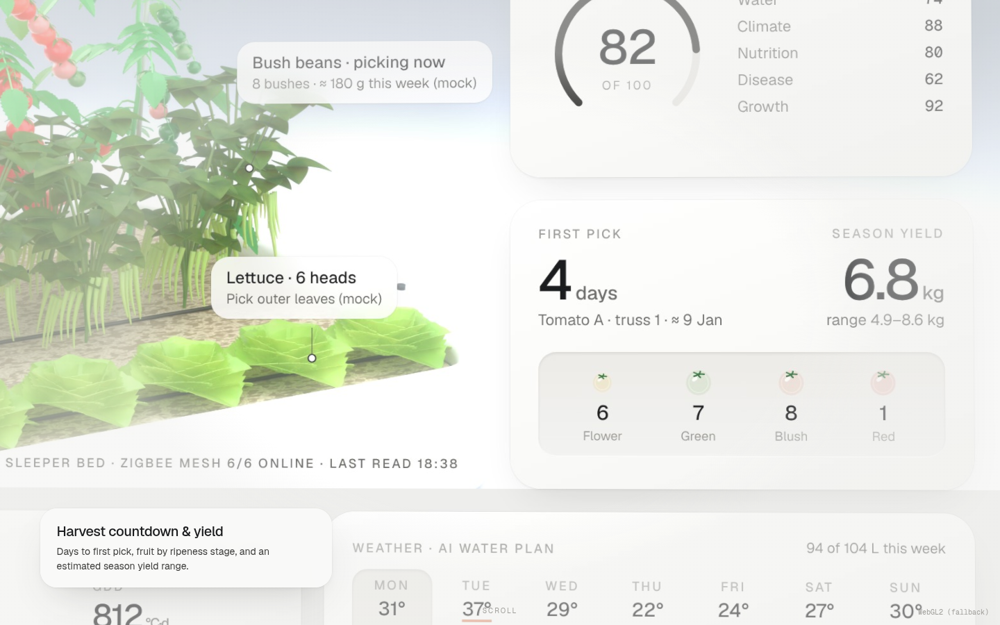
What it showsdays to pick, ripeness, yield rangeThree.js / WebGPU · scenesame planeCamera on scrollPan to first-pick cardInteractionscaptionMaterialMeshBasicNodeMaterial with sRGB texture; glassy plants are baked in the renderFallbackWebGPURenderer, auto WebGL2 backend (tested).
01 · Hardware09 / 15
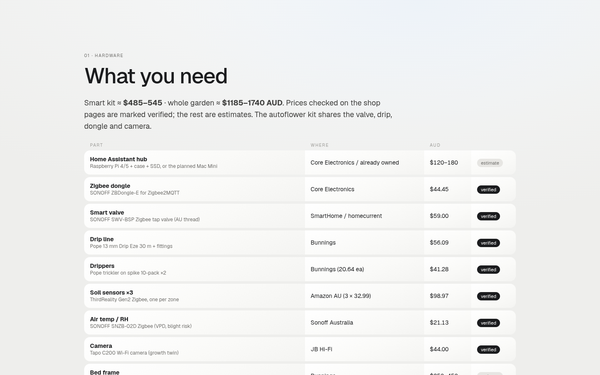
What it shows15 parts with AUD cost, verified vs estimateThree.js / WebGPU · sceneHTMLCamera on scrollnormal scrollInteractionsrowsMaterialMeshBasicNodeMaterial with sRGB texture; glassy plants are baked in the renderFallbackWebGPURenderer, auto WebGL2 backend (tested).
02 · You vs the AI10 / 15
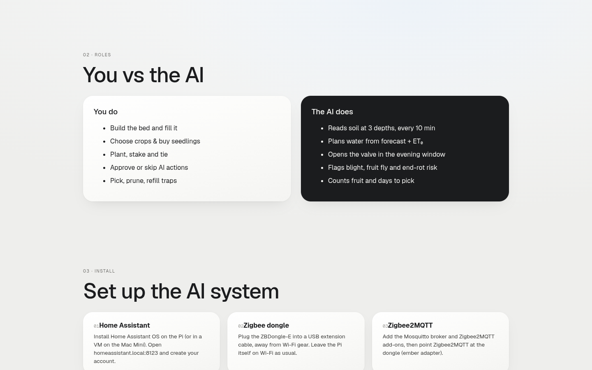
What it showswho does whatThree.js / WebGPU · sceneHTMLCamera on scrollnormal scrollInteractions—MaterialMeshBasicNodeMaterial with sRGB texture; glassy plants are baked in the renderFallbackWebGPURenderer, auto WebGL2 backend (tested).
03 · Install11 / 15
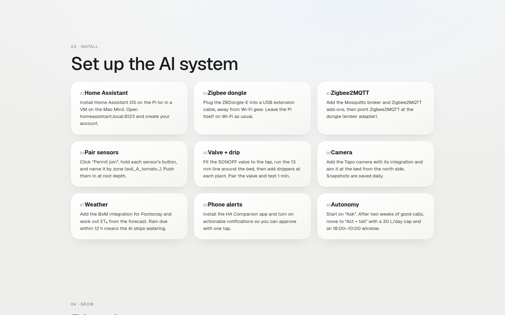
What it shows9 steps: HA → dongle → Z2M → pair → valve+drip → camera → weather → alerts → autonomyThree.js / WebGPU · sceneHTMLCamera on scrollnormal scrollInteractions—MaterialMeshBasicNodeMaterial with sRGB texture; glassy plants are baked in the renderFallbackWebGPURenderer, auto WebGL2 backend (tested).
04 · Planting steps12 / 15
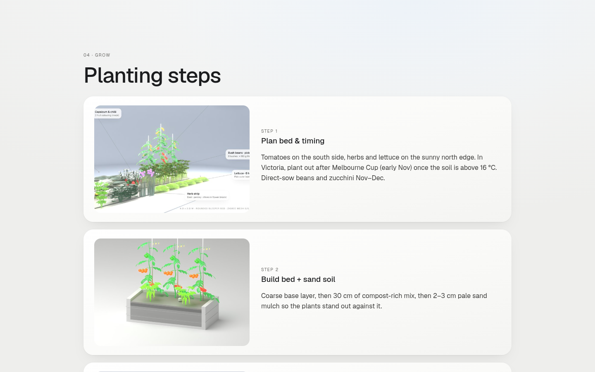
What it shows6 steps, Victorian timingThree.js / WebGPU · sceneHTML + rendersCamera on scrollnormal scrollInteractions—MaterialMeshBasicNodeMaterial with sRGB texture; glassy plants are baked in the renderFallbackWebGPURenderer, auto WebGL2 backend (tested).
05 · Crop gallery13 / 15
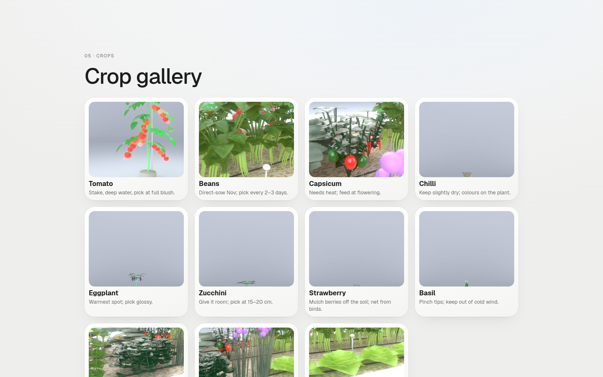
What it shows11 crops + care lineThree.js / WebGPU · sceneHTML + rendersCamera on scrollnormal scrollInteractionslater: per-crop turntableMaterialMeshBasicNodeMaterial with sRGB texture; glassy plants are baked in the renderFallbackWebGPURenderer, auto WebGL2 backend (tested).
End · You now run this14 / 15
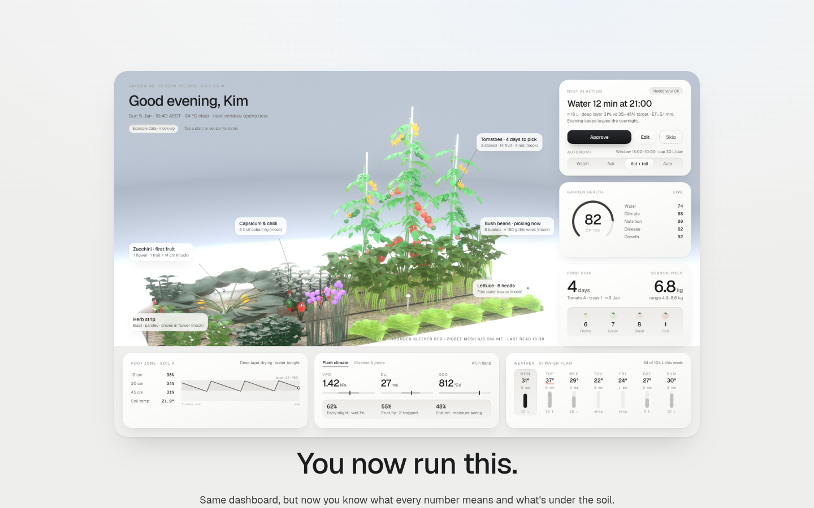
What it showsback to the dashboardThree.js / WebGPU · sceneHTML (later: return to the WebGPU plane)Camera on scroll—Interactions—MaterialMeshBasicNodeMaterial with sRGB texture; glassy plants are baked in the renderFallbackWebGPURenderer, auto WebGL2 backend (tested).
Build notes
StackStatic index.html + main.js · three@0.170 from jsDelivr (importmap) · WebGPURenderer, WebGL2 backend when navigator.gpu is missing · scroll listener (sticky hero, 900vh, 9 stops, hold then ease) · tokens.css design system v3.Swap imagesNow on dashboard-v3.5 (v2.1). Captions flip to the top or right when the stop card sits bottom-left. Stops are in normalised coordinates, so recheck them if the layout moves. Crop images are in assets/*.jpg.NextLayered planes (bed / cards split so the cards lift in parallax) · TSL vignette instead of CSS · per-crop GLB turntables · ScrollTimeline · host on Cloudflare Pages when you OK it.